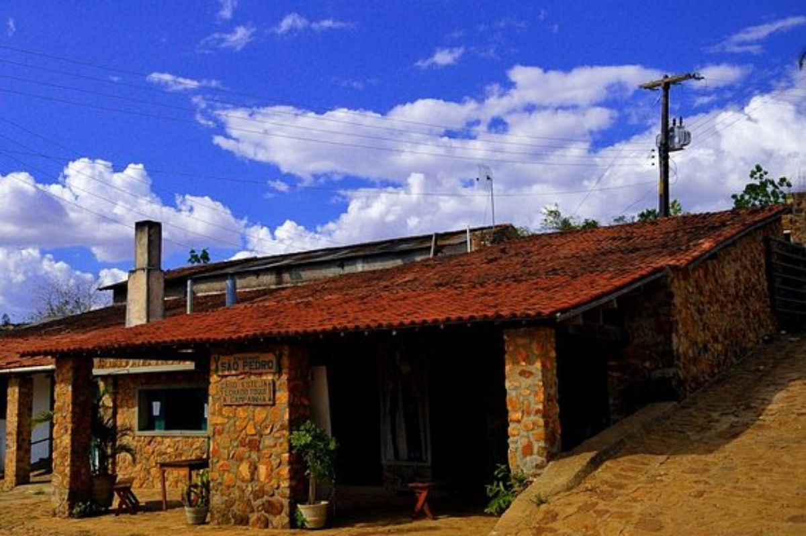

🇧🇷 Português
O Engenho de São Pedro é um dos principais símbolos históricos e culturais de Triunfo, em Pernambuco, e hoje figura entre os lugares mais visitados por quem deseja conhecer a tradição da cachaça artesanal no Sertão do Pajeú.
O visitante acompanha desde a moagem da cana até a fermentação e a destilação nos tradicionais alambiques de cobre — tudo feito de forma artesanal, preservando técnicas que atravessam gerações.
O local mantém sua estrutura histórica, com moendas e galpões que ajudam a contar a trajetória da produção rural em Triunfo, oferecendo uma atmosfera tranquila e acolhedora.
🇺🇸 English
The São Pedro Engenho is one of the main historical and cultural landmarks of Triunfo, Pernambuco, and today stands among the most visited places for those who want to experience the tradition of artisanal cachaça production in the Sertão do Pajeú.
Visitors can observe every step of the process — from grinding the sugarcane to fermentation and distillation in traditional copper stills — all crafted using techniques passed down through generations.
The site preserves its historic structure, with old mills and warehouses that help tell the story of rural production in Triunfo, offering a peaceful and welcoming atmosphere.